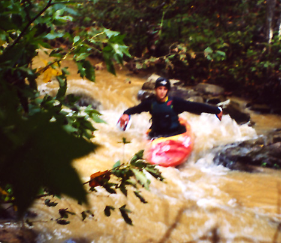
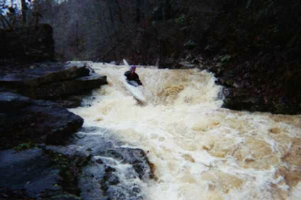
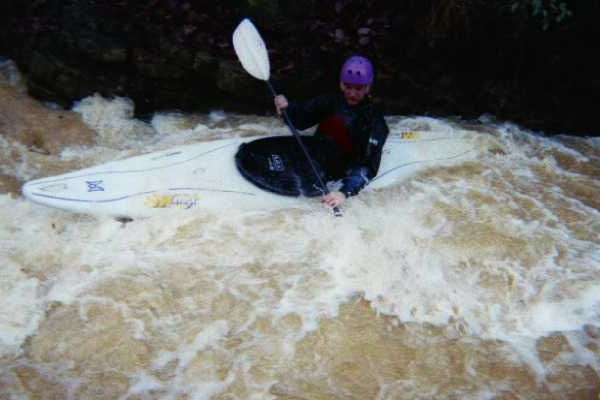

|  | Judson Douglas in
a warmup class II
(photo courtesy Judson Douglas) |
|  | The level measured 36" from the bottom
of the drain pipes that flow under old 280 at the put in for this picture
and the next.
The first is the biggest drop on the run (about 7' into a 10'pool with another 3' drop out). We named it Maytag Falls because the pool was like being in a washing machine. (photo courtesy Tod McChesney) |
|  | The bottom of the "Guillotine" after I
ran it backwards (not my original plan but it worked).
(photo courtesy Tod McChesney) |